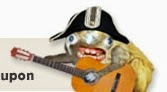

Recovered weblog entry
Belle of the damn ball, thanks
03/02/04 ---Come for the Spong monkeys, stay for the fun!---
Site Stats. If anything motivates me with this Web site, it's when I check the daily statistics and see what brought visitors here. When I checked this morning, I realized that I had become inundated with requests for one thing:
Spong monkeys.
It's now apparent that those funny furry animals have made Quiznos very, very famous indeed. For crying out loud, 12 out of 13 queries were for that commercial. The number one hit was "spong monkey", with a whopping 49 inquiries for the past two days.
I ran across what appears to be the first appearance of these spongmonkeys. You may find it very interesting and annoying at the same time. The Web site is here. It's an endearing song about how much they love the Moon. Joel Veitch, you're a genius. Oh yeah, and you're probably very rich now, too. Jerk.
And now I don't know whether to be proud that my site is back up to 66 visits per day. It's obvious that they're only coming now for the 'monkeys. Well, that's just fine with me, I got the bandwidth, and I ain't that proud.

Teen Girl Squad. Hard to believe that we're up to number five, but that's where life has led us. Strong Bad introduces us to the fact that the others really don't like What's her Face. And if you look closely enough, you'll see that her last name really is "Herface". The obvious moral of this issue is to avoid dipping your head in the sand at the beach. If you do, the following may happen to you:
A. You will inhale sand (and cigarette butts)
B. Birds will find you an attractive perch
C. Presidents and body builders will stop and mock
Ah the humor of Homestarrunner. Long live the king.
Preparations. Since life is barreling along with the velocity of a snapshot, the wife and I have been afoot with the usual pre-birth preparations. We managed to rearrange the second room and reclaim an entire wall, that will definitely come in useful when the babe arrives.
To sum my wife up in a few words: She is simply amazing. I'd imagine that I could search through a few previous blogs and find that same phrase more than a few times, but it needs to be said more often. On Saturday night, my work held a huge bonus party at a local joint called Rawhide. I was really looking forward to it because there were so many people at work that had been chomping at the bit to meet the lovely dame.
I asked her to take her time and get all dolled up for the event, but what walked through that door was nothing short of angelic. She's eight months pregnant and she looks absolutely perfect, and everyone there knew it. I had the belle of the ball and I was damn proud of it, thanks.
When I returned to work today, most people who had met her that night had more than a few comments for me. She was described as glowing, beautiful, and sweet. More fitting words could not be found, for sure.
And why am I here? Too many questions, even more answers. You'll find out soon. Until then, keep coming back. Invite a friend. I take all coupons.